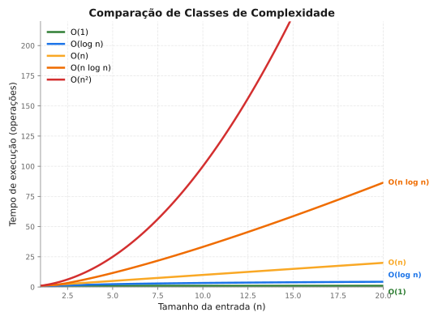

Complexidade de Algoritmos & Análise de Desempenho (gcov e gprof)¶
Disciplina: Estrutura de Dados
Neste capítulo, estudaremos a análise de algoritmos sob duas perspectivas: a teórica (notação Big-O) e a empírica (ferramentas práticas de profiling e cobertura em C, como gcov e gprof). Essas ferramentas ajudam a visualizar quais partes do código consomem mais tempo de execução ou quais caminhos não foram devidamente testados.
1. Análise Teórica: A Notação Big-O¶
A complexidade de tempo descreve a taxa de crescimento do tempo de execução de um algoritmo à medida que o tamanho da entrada (\(n\)) cresce. Usamos a notação Big-O para descrever o pior cenário (limite superior).
1.1 Classes de Complexidade Comuns¶
| Notação | Nome | Exemplo prático | Comportamento |
|---|---|---|---|
| \(O(1)\) | Constante | Acesso a elemento de vetor por índice | O tempo não muda, independente do tamanho dos dados. |
| \(O(\log n)\) | Logarítmico | Busca Binária, inserção em Árvore AVL | O tamanho do problema é dividido pela metade a cada passo. Cresce muito devagar. |
| \(O(n)\) | Linear | Busca Sequencial, percurso de Lista Encadeada | O tempo cresce proporcionalmente ao tamanho da entrada. |
| \(O(n \log n)\) | Linearítmico | Merge Sort, Quick Sort (médio), Heap Sort | Complexidade típica de algoritmos eficientes de ordenação. |
| \(O(n^2)\) | Quadrático | Bubble Sort, Selection Sort, Insertion Sort | Laços aninhados. O tempo cresce exponencialmente pior com entradas maiores. |
1.2 Comparação Visual do Crescimento¶

2. Cobertura de Código com gcov¶
O gcov é uma ferramenta integrada ao compilador GCC que analisa quais linhas do código-fonte foram de fato executadas durante um teste e quantas vezes cada uma rodou. Isso é chamado de Cobertura de Código (Code Coverage).
2.1 Como funciona o gcov?¶
Ao compilar o programa com flags especiais, o GCC insere instruções adicionais que gravam a contagem de execuções.
- .gcno: Arquivo criado na compilação. Contém informações para mapear o binário de volta ao código-fonte.
- .gcda: Arquivo criado ao executar o binário. Contém os dados de execução coletados em tempo de execução.
2.2 Passo a Passo de Uso¶
-
Compilação com suporte a cobertura: Usamos a flag
--coverage(ou-fprofile-arcs -ftest-coverage) junto com-O0(desativa otimizações do compilador para manter a correspondência direta de linhas): -
Executar o programa: Rode o programa normalmente para gerar os dados de contagem:
(Isso criará o arquivomain.gcdano diretório). -
Gerar o relatório
gcov: Execute o utilitáriogcovapontando para o arquivo fonte: -
Ler o relatório: Será gerado um arquivo
main.c.gcov. Ao abri-lo, você verá marcações na lateral esquerda: #####: Linhas que nunca foram executadas.10: Indica que a linha foi executada 10 vezes.-: Linhas sem código executável (comentários, declarações vazias).
3. Profiling de Desempenho com gprof¶
O gprof é um profiler do GNU. Ele analisa o tempo de execução do programa medindo quanto tempo a CPU gasta em cada função e a quantidade de chamadas que cada função recebe.
3.1 Como funciona o gprof?¶
Ele monitora a execução fazendo amostragens periódicas e gravando chamadas de função. Ao rodar o binário compilado com suporte a profile, o programa gera um arquivo chamado gmon.out.
3.2 Passo a Passo de Uso¶
-
Compilação com suporte a profile: Use a flag
(Nota: Aqui podemos usar otimizações como-pg:-O2ou-O3para refletir o desempenho real de produção). -
Executar o programa: Execute o programa normalmente:
(Isso gera o arquivogmon.outno diretório atual). -
Gerar o relatório formatado: Rode o
gprofpassando o binário executável e o arquivo gerado:
3.3 Interpretando o Relatório do gprof¶
O relatório contém duas tabelas principais:
A. Flat Profile (Perfil Plano)¶
Mostra o tempo total gasto em cada função ordenado por consumo.
Flat profile:
Each sample counts as 0.01 seconds.
% cumulative self self total
time seconds seconds calls ms/call ms/call name
82.4 0.82 0.82 1 820.00 820.00 bubble_sort
17.6 1.00 0.18 1 180.00 180.00 quick_sort
% time: Porcentagem do tempo total gasta nesta função.
- self seconds: Tempo gasto exclusivamente nesta função.
- calls: Número total de vezes que a função foi chamada.
B. Call Graph (Grafo de Chamadas)¶
Mostra qual função chamou qual outra, facilitando a identificação da hierarquia de execução e onde os gargalos se originam.
4. Visualizando em Conjunto: Um Exemplo Completo¶
Imagine que temos um arquivo ordenacao.c contendo a implementação do Bubble Sort e do Quick Sort, e queremos comparar sua performance e certificar-nos de que testamos tudo.
Código Exemplo (ordenacao.c)¶
#include <stdio.h>
#include <stdlib.h>
#include <time.h>
void bubble_sort(int v[], int n) {
for (int i = 0; i < n - 1; i++) {
for (int j = 0; j < n - i - 1; j++) {
if (v[j] > v[j+1]) {
int temp = v[j];
v[j] = v[j+1];
v[j+1] = temp;
}
}
}
}
void quick_sort(int v[], int n) {
if (n <= 1) return;
int pivo = v[n / 2];
int i = 0, j = n - 1;
while (i <= j) {
while (v[i] < pivo) i++;
while (v[j] > pivo) j--;
if (i <= j) {
int temp = v[i];
v[i] = v[j];
v[j] = temp;
i++; j--;
}
}
if (j > 0) quick_sort(v, j + 1);
if (i < n) quick_sort(v + i, n - i);
}
int main() {
int n = 10000;
int *v1 = malloc(n * sizeof(int));
int *v2 = malloc(n * sizeof(int));
// Gerar dados aleatórios
srand(42);
for(int i = 0; i < n; i++) {
int val = rand() % 100000;
v1[i] = val;
v2[i] = val;
}
printf("Ordenando com Bubble Sort (N=%d)...\n", n);
bubble_sort(v1, n);
printf("Ordenando com Quick Sort (N=%d)...\n", n);
quick_sort(v2, n);
free(v1);
free(v2);
return 0;
}
Script de Análise Completa (analise.sh)¶
Você pode usar um script automatizado para compilar e analisar:
#!/bin/bash
echo "=== 1. COMPILANDO PARA COBERTURA (GCOV) ==="
gcc -O0 -g --coverage ordenacao.c -o prog_cov
echo "=== 2. EXECUTANDO COBERTURA ==="
./prog_cov
echo "=== 3. GERANDO RELATÓRIO GCOV ==="
gcov ordenacao.c
cat ordenacao.c.gcov | head -n 35
echo "=== 4. COMPILANDO PARA PROFILE (GPROF) ==="
gcc -O2 -pg ordenacao.c -o prog_prof
echo "=== 5. EXECUTANDO PROFILE ==="
./prog_prof
echo "=== 6. GERANDO GRAFO DE CHAMADAS ==="
gprof prog_prof gmon.out > relatorio_gprof.txt
head -n 25 relatorio_gprof.txt
5. Resumo de Comandos Úteis¶
┌────────────────────────────────────────────────────────┐
│ COMMAND CHEATSHEET – COBERTURA & PERFILAMENTO │
├────────────────────────────────────────────────────────┤
│ GCOV (COBERTURA DE CÓDIGO) │
│ 1. gcc -O0 -g --coverage -o bin fonte.c │
│ 2. ./bin (roda testes) │
│ 3. gcov fonte.c (gera fonte.c.gcov) │
│ │
│ GPROF (ANÁLISE DE TEMPO DE CPU) │
│ 1. gcc -O2 -pg -o bin fonte.c │
│ 2. ./bin (gera gmon.out) │
│ 3. gprof bin gmon.out > relatorio.txt │
│ │
│ FERRAMENTAS VISUAIS COMPLEMENTARES │
│ • lcov / genhtml (gera relatórios em HTML para o gcov) │
│ • gprof2dot (converte o grafo do gprof em imagem .png) │
└────────────────────────────────────────────────────────┘